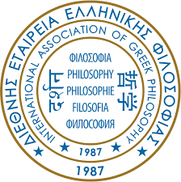

Hello Philosophers
This journey started in Greece!
In ancient times, people had a rather belief in magic and mythology when it came to interpreting the world around them. The world as they perceived it was largely influenced by the presence of a higher deity. The ancient Greek philosophers brought a refreshing new approach to this contemporary philosophical paradigm. They broke away from the tradition of mythological explanations, and embarked on an interpretation largely based on reasoning and evidence.
Our Corporate Sponsors
“The way that we are taught to learn in high school and even college is to memorize or compute things a single way for a test that will prove your ability to ‘think critically.’ Until I took a philosophy class I never quite understood what it really meant to think critically.” -Madayo Azaslos, Student at Madayo University.
Thank You, Sponsors!
The Most Influential Philosophers
Pythagoras (570 BC–495 BC)
Pythagoras is known far more for his theories and ideas in mathematics than in philosophy. In fact, is best known for the theorem in geometry that is named after him. He is credited with founding a philosophical school that amassed a great many followers.
Aristotle (384 BC–322 BC)
Aristotle of Stagira was the most influential among the disciples of Plato. His interpretation of things was more based on facts learnt from the experience people would gain in their lives, an approach that differed from that of his master who preferred a perspective that was beyond the accessibility of the physical senses. He proved to be an imaginative writer and equally creative polymath, gradually re-writing pre-established concepts in almost all areas of knowledge that he encountered.
Plato (427 BC–347 BC)
Plato was a student of Socrates and was visibly influenced by the philosophical approach of his master. But while Socrates was relentlessly occupied with interpreting philosophy based on human reasoning, Plato combined the two major approaches of pre-Socratic metaphysics and natural theology with Socratic ethical theology.